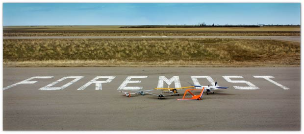
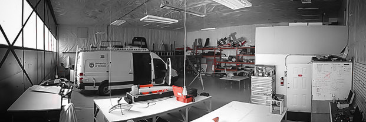
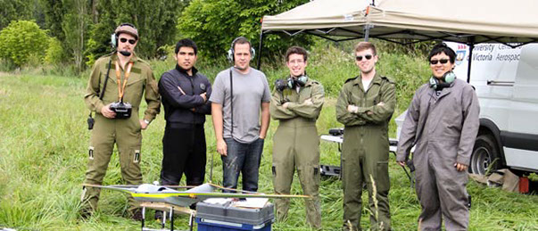

The University of Victoria Center for Aerospace Research has been leading research into unmanned vehicles and their application since 2012. The center's mandate is to promote the use of unmanned air vehicles in commercial applications that were previously impossible or prohibitively expensive using manned aircraft and helicopters. The future of aviation is unmanned and UVic CfAR can help you get your idea off the ground!
UVic CfAR has a 1500 sq-ft design office and over 4000 sq-ft of hangars space, including an electronics/avionics laboratory, aircraft integration area and a variety of ground testing capabilities including static load & GVT rigs, bifilar pendulum test fixtures and an engine test bench. UVic CfAR also has a 500 acre flight test range within minutes of the hangar with a blanket Special Flight Operating Certificate (SFOC) granted by Transport Canada.
Follow some of our videos postings at the UVicCfAR Youtube channel.
UVic CfAR has a mix of full time engineers, Post Doctorates, graduate researchers and undergraduate cooperative students. The Center is led by Professor Afzal Suleman who is renowned in the areas of aerospace, green technologies and unmanned aircraft. The Center has a great team capable of tackling any project and we are always looking for new talent. Contact us if you are interested in being part of our team.